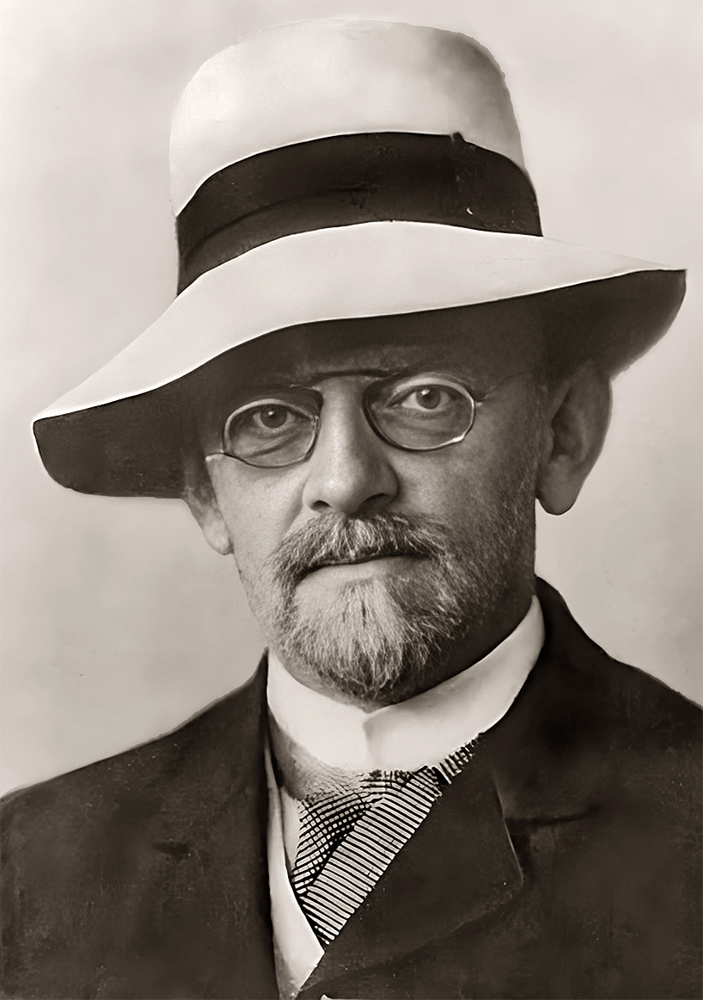
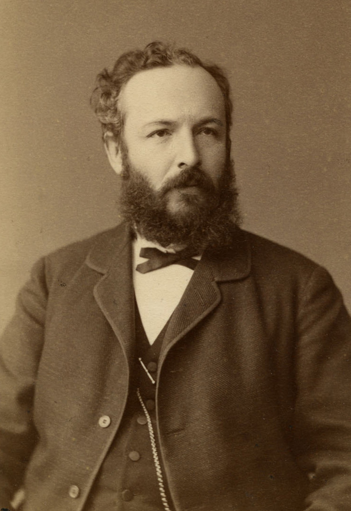

Numbers, our whole world is dominated by numbers, all of which are finite – even if some are simply too large to comprehend. However, there is one “number” which defies all others: infinity.
However, infinity isn’t technically a “normal” number, like 2.718, or 6.02*10^23; it’s the representation of a never-ending value that can never be reached or surpassed. Therefore, infinity doesn’t follow the normal rules of arithmetic. Although 1 minus 1 may be 0, infinity minus 1 is still infinity. Since infinity is the representation of something never-ending, you cannot ever run out of infinite things… or can you?

At the beginning of the 20th century, a German mathematician named David Hilbert endeavoured to solve this problem with a famous thought experiment. Let’s say you have a hotel with infinite rooms, starting at 1 then going off to infinity. Now, imagine that this hotel is fully booked, every single room is occupied by a guest. What happens if a new guest comes to the reception area and asks for a room, how can you accommodate them? You might first believe that there isn’t an actual way to make room for them, but there is. You tell everyone to move up by one room: the person in room 1 goes to room 2, the person in room 2 to 3, and so on. Now room 1 is free and this customer can go into it.
We’ve accommodated one guest successfully – in spite of the hotel being full. But now a bus is pulling up. This bus, using the same method as the hotel, is infinitely large and can therefore hold an unlimited number of people. They all want to have a stay at the hotel. When there was just one guest, we could simply move everyone up by one, but we can’t actually move everyone up by an infinite number of rooms. Well there is actually a way: you tell everyone to move into the corresponding room number double their current one.
As a result, the person in room 1 goes to room 2, the person in room 2 to room 4, and the person in room 3 to room 6. This leaves an infinite number of gaps between the occupied rooms, all of the odd numbered rooms, which can now be filled by the guests from the bus. Well done, you have successfully managed to fit an infinite number of new people into an already completely full, infinitely large hotel. It surely seems like we can’t run out of room here, I mean the whole point of infinity – as mentioned earlier – is that it is never-ending.
Finally, a crowd approaches your hotel. They came from an interdimensional business meeting, where an infinite number of executives came together. Because there were multiple identical copies of executives from different universes, each were given their own unique nametag with which to identify themselves. Now, this nametag is composed from an infinitely long, random string of the letters “P” and “I”. The first person pulls up the hotel, his name is “PIPPPPIIIPIPIPIPIIIPIPIPIPIPI…” it’ll probably just be better to call them “PI”. They come up to the counter and ask for rooms for them and all the other business executives, but you tell them that unfortunately you cannot fit them here. Why?

If the hotel is infinitely large, surely you can fit these people, especially if you could fit everyone from the infinite bus. The reason is rooted in the unique nametags for each guest, and something known as Cantor’s Argument. Let’s say that you do actually match up every single executive on this list to a room in the hotel, since both are infinite we have used up all available hotel rooms, but have also surely used up every executive. Well, Cantor’s Argument says no.
Firstly, remember that all of these nametags are infinitely long and don’t follow any pattern, like PI, as it’s just an infinite string of numbers, lacking any known pattern. Now you take the first letter from the first name, “P”, and you flip it to “I”. Then you take the second letter from the second name, let’s imagine it to be “I”, and you flip this to “P”. You repeat this step forever until you have gone through every single name on the list.
You have successfully created an entirely new name that wasn’t on this list; the first letter is different to the first letter from the first name, the second from the second name and the third letter from the third name. It is different to every name on the list by at least one letter. But wait, you’ve already used up every single hotel room – seeing as you matched every hotel room to each name. Still, you have managed to create an entirely new name from scratch, while the hotel is already full. But how?
The number of rooms in the hotel is countably infinite; you can count towards it, starting at 1 then 2 then 3 then so on -- as it’s the set of all integers, or the set ℤ-- even if there isn’t enough time in the lifespan of the whole universe to finish it. The set of countable numbers is denoted by ℵ₀. In contrast, the name of each executive is uncountably infinite, represented as the set ℵ₁.
You can think of it almost like the amount of all numbers there are, by which I mean not just the integers, 1 2 3 4 and so on, but every number in-between. If you try to count all of these numbers you begin with zero, but… what’s next? A number with an infinite number of zeros and then a one at the end you’d imagine, but you can’t even count this entire individual number, let alone all of the infinitely long numbers. This very fact makes this infinity so much larger than the countably infinite number of hotel rooms that there are, such that you cannot ever possibly hope to accommodate all of the unique guests from the business meeting.
The significance of this idea is that it reveals that although infinity may initially seem like a simple concept for something without end, it’s actually a layered, hierarchical system, with some infinities being infinitely larger than others. Through this, what may have initially appeared to be a concept for the end of all numbers managed to become a window into a fascinating new world of mathematics.
The true nature of infinites raises a deep question about the fundamental nature of humanity. Although our universe is likely finite, with the observable universe only stretching 41.5 billion light years in every direction, the world of mathematics is infinitely large on multiple different scales and allows us to explore a world far beyond the scale of our own. Although it isn’t physically possible to host an infinitely large business meeting, or have an infinitely large bus or hotel, the concepts demonstrated with them are very much real.
Maybe, the implicit meaning behind all of this is not that there are multiple scales of infinity, but instead that our human minds are destined to overcome the finite barriers of our universe, always destined to explore an even larger world beyond our own.
Infinity obviously isn’t something to which we can actually count, but we can still comprehend it, we still came up with the concept of infinity, and then with the idea of multiple distinct forms of infinity. In doing this, we don’t just grasp the incomprehensible scale of numbers, but also the desire of humans to reach beyond the bounds of our own universe, creating an entirely new world unbounded by the laws of this universe.